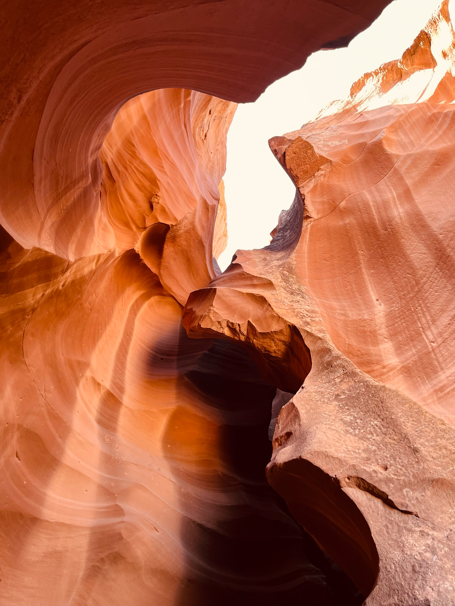
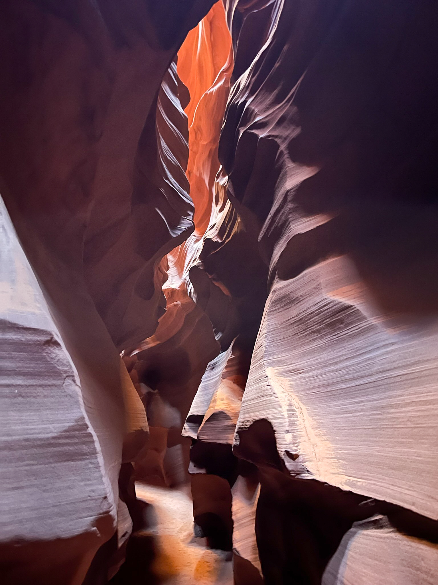
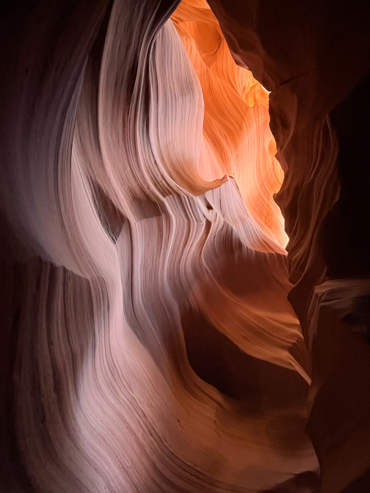

- 
- 
- 


I enjoy landscape and wildlife photography. Getting out in nature and capturing ever changing moments of beauty allows me to combine photography with hiking.
Lower Antelope Canyon, Arizona is part of the Lake Powell Navajo Tribal Park and requries a Navajo guide to access the canyon.